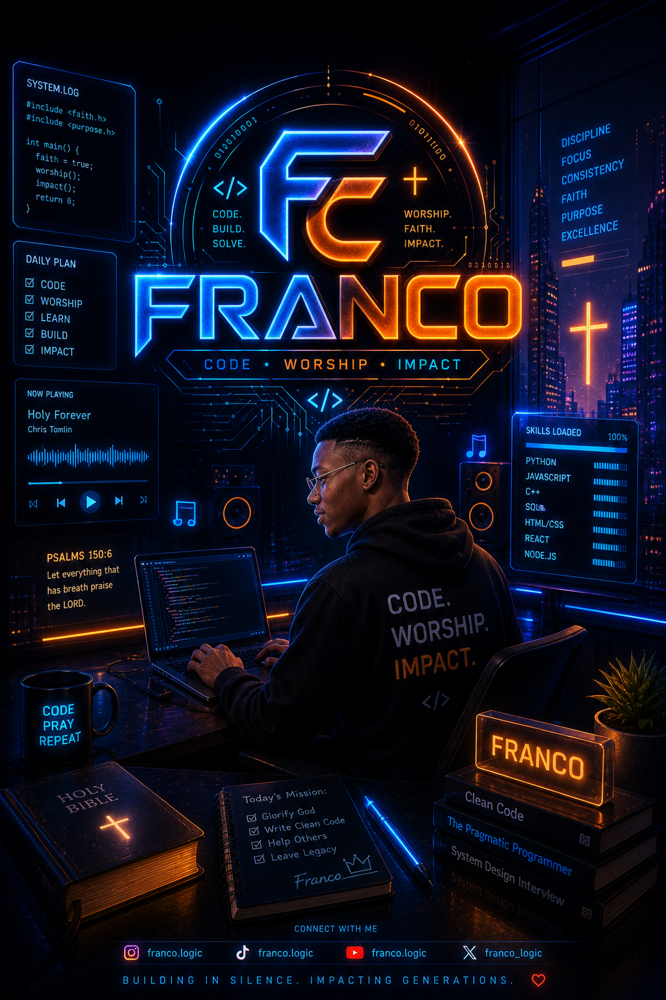

About Me
Who I Am
Hi, I’m Franklin Ayomide, also known as Franco Tech. I’m a Computer Science student at Adekunle Ajasin University Akungba (AAUA) and a web developer focused on creating elegant, functional, and user-friendly digital experiences. I’m passionate about frontend development, full-stack problem solving, and learning practical tools that help businesses and users get more from the web.

Developer Origin
In the Moment I heard about Web development and wanted to learn it, Then I started learning HTML and CSS in 2023. I have been learning since then on HTML and CSS. Until I participated in Siwes Programming at Dalse Tech Hub Akungba Akoko Ondo State Nigeria ,where I gained knowledge about Full-Stack Development. I started at 31th of March 2026 to September 2026. I am currently learning more about full-stack development and building real-world projects.
What I Do
I build responsive, accessible, and interactive websites using modern web technologies. I enjoy solving real-world problems with code and continuously learning tools that help me build better digital productsv and looking toward Collaboration.
Archivement
I have completed several projects that showcase my skills in web development. These projects include responsive websites, interactive applications, and Full-Stack solutions.